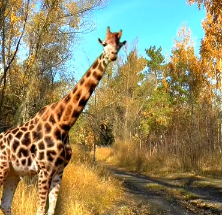
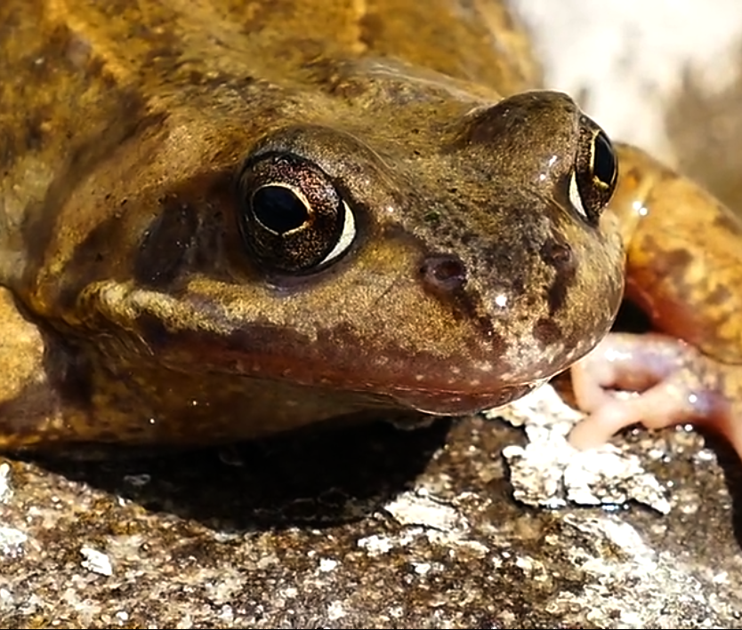
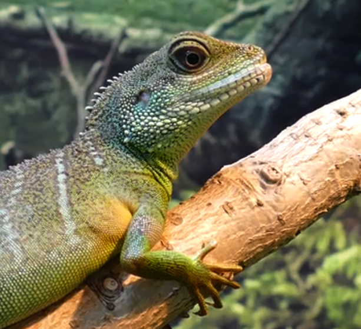
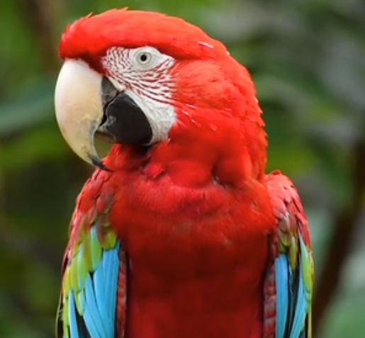
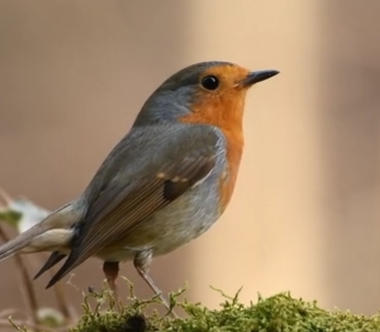
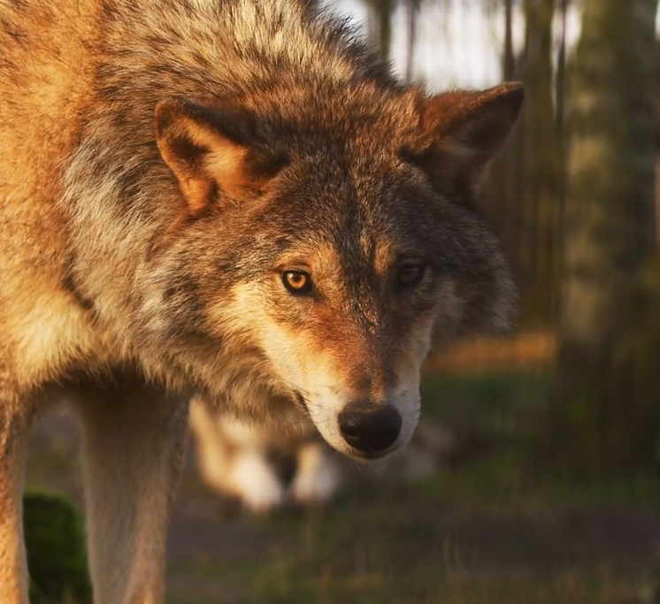

El lobo (Canis lupus) es una especie de mamífero placentario del orden de los carnívoros. El
perro
doméstico (Canis familiaris) se considera miembro de la misma especie según distintos indicios, la
secuencia del ADN y otros estudios genéticos.
Sin embargo, desde 1758 se consideró una especie distinta por el biólogo Carl Linneaus en la décima
edición de Systema naturæ.
El primer registro fósil data de hace ochocientos mil años.
Antaño los lobos fueron abundantes y se distribuían por
Norteamérica y Eurasia. No obstante, por una serie de razones relacionadas con el hombre, los lobos
habitan únicamente en una muy limitada porción del que antes fue su territorio.
Aunque está clasificada como una especie poco amenazada de extinción en algunas regiones, incluyendo la
parte continental de los Estados Unidos de América, la especie está listada como en peligro o amenazada.
Los lobos son cazados en muchas áreas del mundo por la amenaza que representan para el ganado, así como
por deporte.
Video Jirafa

La jirafa (Giraffa camelopardalis) es una especie de mamífero artiodáctilo, de la familia
Giraffidae propio de África.
Video rana

Rana es un género de anfibios anuros de la familia Ranidae, que habita en Eurasia templada
hasta Indochina.
Video lagarto

Los lacertilios o lagartos (Lacertilia) son un grupo parafilético de escamosos que incluye la
mayoría de los escamosos actuales, como varanos, iguanas, coritofánidos, camaleones, lagartijas
y geckos
Video loro

Los loros típicos (Psittacoidea) son una superfamilia del orden Psittaciformes, con un total
de 369 especies.
Video petirrojo

El petirrojo europeo(Erithacus rubecula) es una especie de ave paseriforme de la familia
Muscicapidae.
Video lobo

El lobo es una especie de mamífero placentario del orden de los carnívoros. El perro doméstico
se considera miembro de la misma especie según distintos indicios